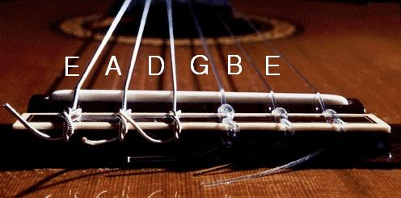
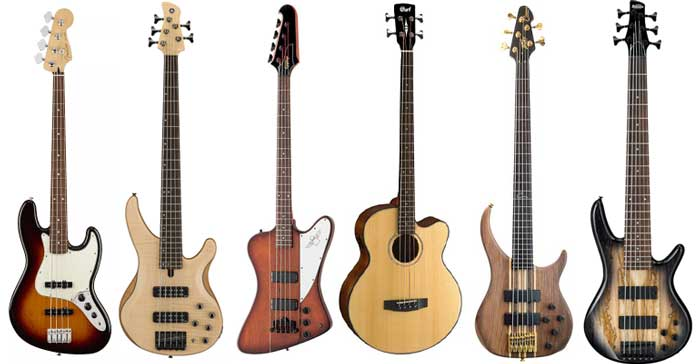
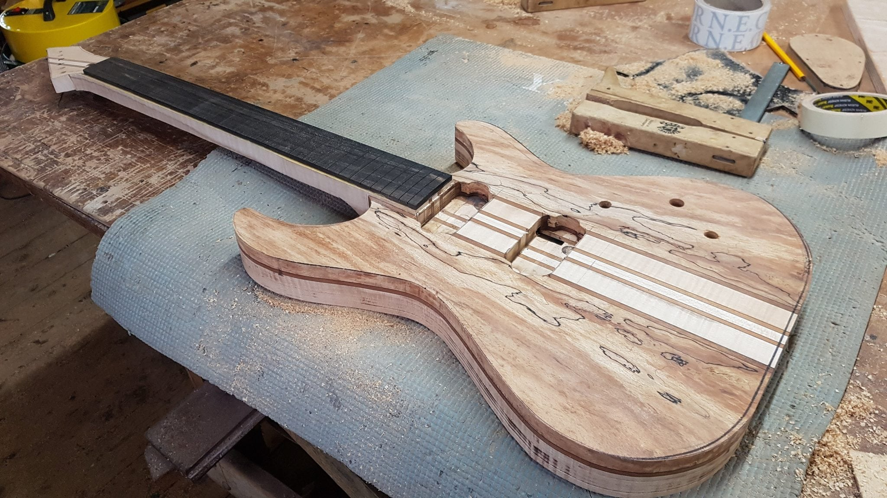

A gitár (nemzetközi szó a spanyol guitarra-ból, ez pedig – arab közvetítéssel – a görög kitharából) a húros hangszerek, ezen belül a pengetős hangszerek csoportjába tartozó hangszer. Megszólaltatása pengetővel, illetve ujjal történik.
Általában hat húrja van, ezek hangolása E-A-d-g-h-e'. Mint láthatjuk, a húrok nagy része kvart távolságra van egymástól, kivétel a g-h, ez nagyterc; így a gitáros több mint három oktáv hangterjedelem fölött rendelkezik.
A gitár kivitele szerint lehet klasszikus, akusztikus, elektromos vagy elektro-akusztikus. A gitár napjainkra hihetetlen népszerűségre tett szert. Szinte minden zenei stílusban képviselteti magát valamilyen formában. Ez leginkább sokoldalúságának köszönhető, hiszen az egyes gitárok típusuktól és zenei stílustól függően betölthetnek szólista szerepet, de megállják helyüket a ritmusszekcióban is. Gitáron éppúgy előadhatók klasszikus darabok, mint napjaink modern popzenéi, sőt a rock például elképzelhetetlen lenne e hangszer nélkül.
A gitárkészítés – bár napjainkban már tömeggyártásról beszélünk – megőrizte a kézműves hangszerkészítők hagyományait. A gitárok fejlődése napjainkban is tart, köszönhetően annak, hogy a zenészek és mérnökök egymással karöltve aknázzák ki a hangszer felépítésében rejlő lehetőségeket. Jó példa erre az elektromos gitárok megjelenésében úttörő szerepet vállaló Leo Fender, aki rádiómérnöki tudását kamatoztatva vett részt a mágneses hangszedő kifejlesztésében, illetve a zenész Les Paul, aki saját zenei elvárásainak megfelelően alakította ki hangszerét.
